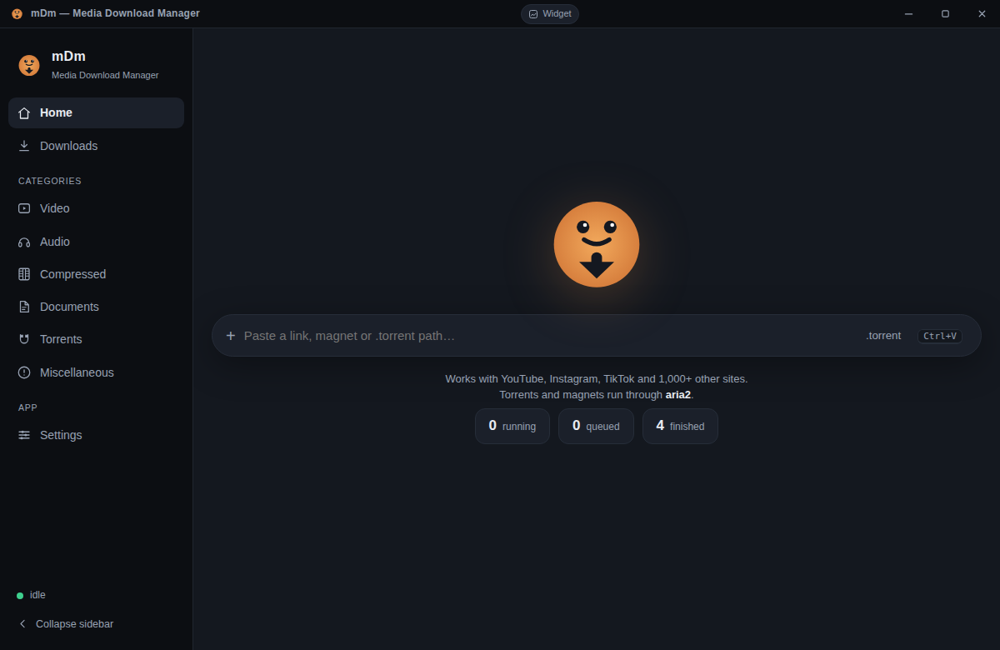
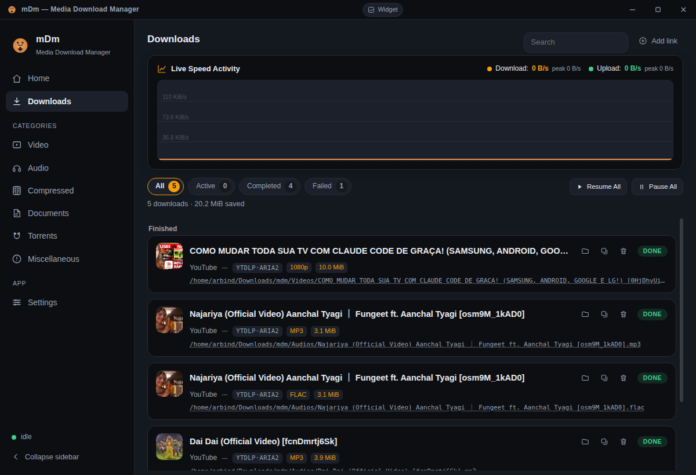
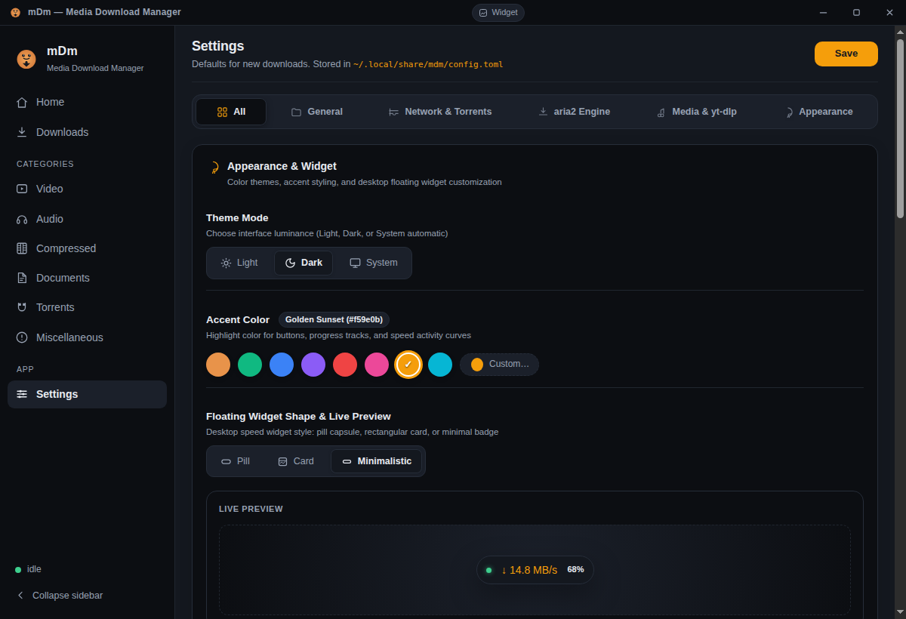

Built in the open
mDm is free and open source (MIT). I wrote up why I built it, how the two engines work together, and what’s next — read the full story on my site.
Read the story on arbindbuilds.comA free, open-source download manager that puts yt-dlp and aria2 into one fast desktop app — 4K video, full playlists with album art, torrents, and a floating speed widget.
Free forever · MIT licensed · No ads, no accounts, no paywall
Pick your platform. Every build below is v0.1.0-alpha.3, straight from the GitHub release.
Windows 10 / 11, x64. The installer bundles everything the app needs.
Installer (.exe)Recommended · 91 MB Portable ZIPNo install, extract and run · 118 MB CLI only (.zip)mdm.exe · 5 MBApple Silicon (arm64), macOS 11+. Unsigned build — first launch: right-click the app, then Open.
Disk image (.dmg)Drag to Applications · 7.4 MB CLI only (.tar.gz)mdm binary · 4.9 MBUbuntu / Debian / Mint / Pop!_OS and friends, x86_64.
Debian package (.deb)8 MB AppImageRuns anywhere · 82 MB CLI only (.tar.gz)mdm binary · 5 MBAlso on the release page: the Chromium browser extension and SHA256SUMS.txt to verify your download. · All releases
The real app, not a mockup.



Four things that make it different from the dozen other downloaders.
yt-dlp handles 1,000+ sites, playlists and audio extraction. aria2 takes over the raw transfer at up to 16 parallel connections, plus torrents and magnets. The handoff is automatic.
A small frameless pill on your desktop showing live download and upload speed. Double-click it and the main window comes back. Three styles, stays out of the way.
mdm add <url> does video, audio, files and torrents. mdm daemon runs a headless server with a web UI and REST API on your machine.
A Chromium extension that spots playable video on a page and shows a one-click download bar, IDM-style. Right-click any link or media and send it straight to mDm.
mDm is free and open source (MIT). I wrote up why I built it, how the two engines work together, and what’s next — read the full story on my site.
Read the story on arbindbuilds.com